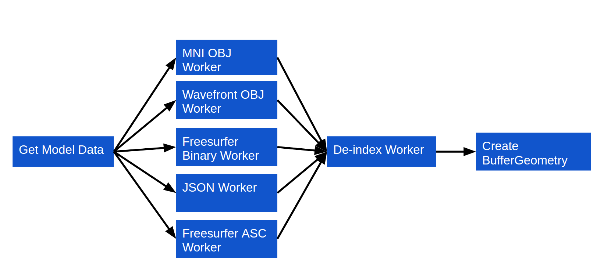

BrainBrowser
Neurological Data Visualization
Using HTML5 and WebGL
Tarek Sherif
McGill University
What is BrainBrowser?
What is BrainBrowser?
- Open-source JavaScript library exposing web-based tools for neuroimaging
-
Key technologies:
- HTML5 Canvas 2D
- WebGL
- Web Workers

What is BrainBrowser?
-
Volume Viewer
- Explore volumetric data through orthogonal slices
-
Surface Viewer
- Explore surface data in real-time 3D
Background: Neuroimaging
-
Neuroimaging is a fairly young field
- Became widespread in the 1990s
-
Magnetic Resonance Imaging (MRI) became the most common technique
- Low invasiveness
- No exposure to radiation
Background: Neuroimaging
Typical Workflow
-
Acquisition
- Volume of voxels representing intensity of the MR signal
- Intensity can represent structural, activation or diffusion patterns
-
Processing
- Extract features of interest (e.g. surfaces, measurements)
-
Visualization
- Explore the data
- Quality control
Background: Technology
HTML5 Canvas 2D
- High-performance, scriptable 2D drawing surface
- Pixel-level image processing
Background: Technology
WebGL
- The browser talks directly to the graphics card
- High-performance 3D graphics
Background: Technology
Web Workers
- JavaScript is single-threaded by design
- Web Workers allow for true multi-threading
- Compute-intensive tasks can be done in the browser without blocking UI or rendering
Volume Viewer
- Display orthogonal 2D slices of a 3D volume
- Uses HTML5 Canvas 2D for image processing and display
Volume Viewer
Demo
Volume Viewer
Code
BrainBrowser.VolumeViewer.start("visualization-div", function(viewer) {
viewer.render();
viewer.loadDefaultColorMapFromURL("color-map.txt");
viewer.loadVolume({
type: "minc",
header_url: "volume.mnc.header",
raw_data_url: "volume.mnc.raw"
});
});
Volume Viewer
Workflow
Volume Viewer
Workflow
-
Load colour map
- Array of colours
- Used to colourize scalar data
- Loaded over the network or from the local file system
Volume Viewer
Workflow
-
Load volume data
- Header describing the volume
- Volume of intensity values
- Each voxel contains a scalar value
- Loaded over the network or from the local file system
Volume Viewer
Workflow
-
Create image
- Pull out a slice along one axis
- Colourize intensity values based on the colour map
- Display on the canvas
Surface Viewer
- Real-time display of 3D surfaces
- Visualize various data maps on loaded surfaces
- WebGL for rendering using the three.js library
- Web Workers used for data parsing
Surface Viewer
Demo
Surface Viewer
Code
BrainBrowser.SurfaceViewer.start("visualization-div", function(viewer) {
viewer.render();
viewer.loadColorMapFromURL("models/spectral.txt");
viewer.loadModelFromURL("models/brain.obj", {
format: "mniobj",
complete: function() {
viewer.loadIntensityDataFromURL("models/cortical-thickness.txt");
}
});
});
Surface Viewer
Workflow
- Load geometry
- Load intensity data
Surface Viewer
Geometry Workflow
Surface Viewer
Geometry Workflow
-
Load geometry
- List of vertices, normals, indices, colours
- Loaded over the network or from the local file system
Surface Viewer
Geometry Workflow
-
Parse geometry
- One Web Worker script for each supported format
- Parse external geometry description into internal object model
- Plugin framework
Surface Viewer
Geometry Workflow
-
De-index
-
Geometry usually described in two parts
- Array of vertices in 3D space
- Array of indices describe how to build triangle from vertices
-
Core WebGL 1.0 spec limits indices to 16 bits
- Maximum of 65535 vertices
-
Geometry usually described in two parts
Surface Viewer
Geometry Workflow
-
De-index
-
Neurological geometry can get much bigger
- DTI demo model contains 560674 vertices
- De-index Web Worker "unrolls" the geometry indices
- Makes it so reading vertices in order builds the triangles
-
Neurological geometry can get much bigger
Surface Viewer
Intensity Data Workflow

Surface Viewer
Intensity Data Workflow
-
Load colour map
- Same as for the Volume Viewer
Surface Viewer
Intensity Data Workflow
-
Load intensity data
- List of per-vertex scalar values
- Loaded over the network or from the local file system
- One Web Worker script per supported format
Surface Viewer
Intensity Data Workflow
-
Map colours
- Map per-vertex scalar values to colours
- Apply colours to vertices